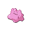
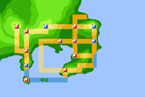

#158 · Transform Pokémon
Ditto
Normal Available from Kanto
A Ditto rearranges its cell structure to transform itself. However, if it tries to change based on its memory, it will get details wrong.

Base stats
- HP
- 48
- Attack
- 48
- Defense
- 48
- Sp. Atk
- 48
- Sp. Def
- 48
- Speed
- 48
- Total
- 288
- Height
- 0.3 m
- Weight
- 4 kg
- Catch rate
- 35 (Very Hard)
- Base EXP
- 101
- Effort values (EV)
- 1 HP
- Growth rate
- Med. Fast
- Base friendship
- 70
Abilities
Evolution
Ditto is not part of an evolution line.
Moves
Level-up
| Lv. | Move | Type | Category | Power | Accuracy | PP |
|---|---|---|---|---|---|---|
| 1 | Transform | Normal | — | — | 10 |
Where to find it
Wild Pokémon



The rates are the values the game uses. Times of day: Day 6 AM–7 PM, Night 7 PM–6 AM.
| Location | Region | Method | Time of day | Rate |
|---|---|---|---|---|
| Pokémon Mansion | Kanto | Inside a building | Any time | 10% |
| Cerulean Cave 1F | Kanto | Cave | Any time | 15% |
| Cerulean Cave 2F | Kanto | Cave | Any time | 16% |
| Cerulean Cave B1F | Kanto | Cave | Any time | 26% |
| Route 13 | Kanto | Tall grass | Any time | 5% |
| Route 14 | Kanto | Tall grass | Any time | 15% |
| Route 15 | Kanto | Tall grass | Any time | 5% |
| Route 34 | Johto | Tall grass | Any time | 5% |
| Route 35 | Johto | Tall grass | Night | 11% |
| Route 47 | Johto | Tall grass | Any time | 1% |
| Safari Zone Gate | Johto | Tall grass | Any time | 5% |
| Desert Underpass | Hoenn | Cave | Any time | 50% |
Wild ones sometimes hold an item:  Quick Powder (45%),
Quick Powder (45%),  Metal Powder (10%).
Metal Powder (10%).